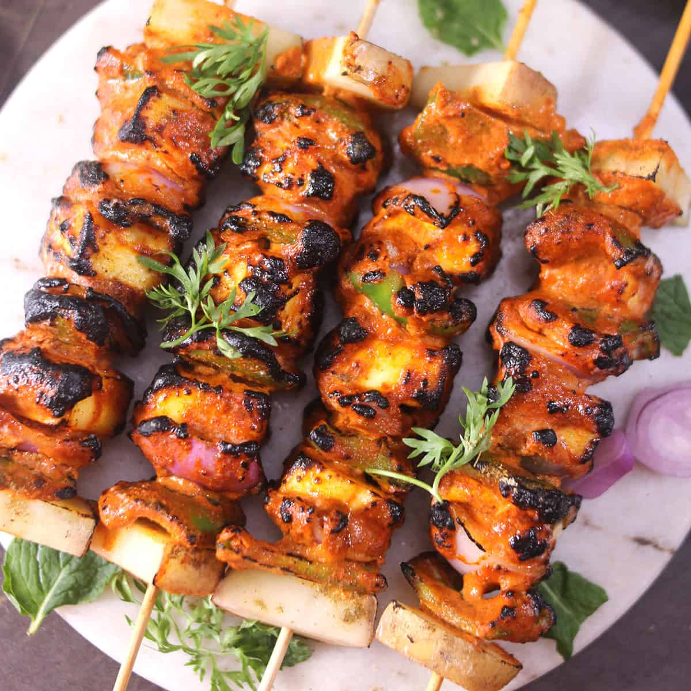

Paneer tikka is a classic veg Indian snacks for party known for its delightful taste. It consists of marinated and grilled paneer cubes, resulting in a perfect blend of smoky and spicy flavours. Preparation time is around 30 minutes.

2.Vegetable Spring Roll
Vegetable spring rolls are crispy and famous veg starter food filled with a mix of vegetables, offering a delectable combination of textures. Prep time is approximately 40 minutes.
3.Spinach And Cheese Stuffed Mushrooms
These mushrooms are savoury snacks for party at home , stuffed with a mixture of spinach and cheese, creating a heavenly combination. Preparation takes about 25-30 minutes.
4.Crispy Potato Wedges
Simple yet irresistible, these potato wedges are seasoned and baked to perfection, offering a deliciously crunchy experience. Prep time is roughly 35 minutes.
5.Vegetable Pakoras
Vegetable pakoras are one of the most traditional and famous veg snacks ideas for party! It’s deep-fried fritters made with a variety of veggies and chickpea flour, spiced to perfection. They can be ready in approximately 30 minutes.
6.Hara Bhara Kebabs
Hara Bhara Kebabs are green kebabs made with spinach, peas, and a blend of aromatic spices, offering a fresh and herby taste. Prep time is about 30-35 minutes.
7.Mushroom Bruschetta
Mushroom bruschetta consists of sautéed mushrooms on toasted bread with garlic and herbs, creating a perfect blend of textures and flavours. This veg starter food can be prepared in around 25 minutes.
8.Dahi Puri
Dahi puri, a popular Indian street food, consists of crispy puris filled with yoghourt, chutneys, and spicy potatoes, offering a burst of sweet, spicy, and savoury flavours. Prep time is roughly 30 minutes.
9.Fried Mozzarella Sticks
Fried mozzarella sticks are a cheesy delight, battered and deep-fried to golden perfection. They take approximately 25-30 minutes to prepare.
10.Cheesy Maggie Roll
Cheesy maggie rolls are a fusion of the beloved Maggi noodles and cheesy goodness, rolled up in a crispy casing. They can be ready in about 20 minutes.
MAIN COURSE SECTION
1.Cedar-Plank Salmon
A big salmon fillet always feels like a festive main course, especially when it's cooked on a cedar grilling plank, so it picks up a whisper of smoky flavor. Kick off your seafood-themed dinner party with grilled oysters and pair the fish with a simple tomato salad.
2.Braised Chicken Legs With Grapes and Fennel
There's nothing wrong with defaulting to chicken when you're trying to think of dinner party ideas. The key is to select a truly special chicken recipe, like this easy sweet-and-spicy braise, made with ribbons of fennel and juicy table grapes. You'll want to have a loaf of bread on the side for sopping up the sauce.
3.Seared Scallops With Brown Butter and Lemon Pan Sauce
Scallops are always a stunner, but these are dead simple to make: Juice lemons. Spoon out capers. Heat pan. Cook scallops. Make sauce in same pan. Serve.
4.Grilled Pizza
Grilling pizza makes a main dish recipe into a party. This dough is designed for the grill—you can get creative with your toppings, or let your guests go wild. (Just don't get them started about whether you need New York tap water to make a superior slice.)
5.Double-Stack Mushroom and Chicken Cheeseburgers
These chicken-and-mushroom burgers are worthy of a weekend hangout, but totally possible to make for a casual dinner party on a weeknight. Curry mustard is the ideal condiment, but you can use whatever mustard you have on hand.
6.Quick Potato Gnocchi
Impress your friends with homemade gnocchi, then let them in on the secret: these pillowy Italian dumplings were made quicker with instant mashed potatoes. Top with Parmesan and fresh herbs, and serve a salad after.
7.Classic Sole Meunière
This classic French dish frequently shows up in restaurants, but we promise that it's truly easy to pull off at home.
8.Broken Lasagna With Parmesan and All the Peas
The flat, wide shapes of broken lasagna noodles drape over themselves, trapping the buttery, lemony sauce.
9.Habanero BBQ Shrimp
Marinate shrimp in a sweet-and-spicy mixture of apricot preserves, lime juice, habanero, soy sauce, garlic, and ginger—then throw them on the grill for an easy 15-minute dinner. Looking for a side dish? Perhaps this simple grilled corn recipe will do the trick.
10.Grilled Pork Spareribs With Soda Bottle Barbecue Sauce
Barbecue brisket is a whole ordeal, but you can get rich, meaty flavor faster if you focus on tender pork spareribs. These have two sauce options, made with your choice of Coca-Cola or ginger ale.
COCKTAIL
1.Paloma
Grapefruit soda can be substituted with freshly squeezed grapefruit and lime juice for a better, sourer flavor. The cocktail is typically served on the rocks in a highball glass with a lime wedge garnish. A good recipe on how to make Paloma can be found on Drink up London website and on Hamyard Hotel in London website.
2.Monkey Gland
It’s a drink born in the glitz and the glamour of the 1920’s, invented by a bartending maestro you have probably never heard of, Harry McElhone (author of Harry’s ABC of Mixing Cocktails).
Flavour-wise, it’s a fruity number with orange juice and grenadine, with a backbone of anise from the absinthe Holding the whole drink together is the spirit of the moment, your favoured London Dry Gin.
3.Bramble
This refreshing cocktail has a strong aroma of fresh berries such as blackberries or raspberries. It is prepared by stirring ingredients with crushed ice in an old-fashioned glass, then pouring blackberry liqueur over the combination in order to create a marbling effect. Before serving, Bramble is typically garnished with blackberries and a slice of lemon. Bramble recipe, along with recommended Gin from London Drinks Guide would be DryCat Gin.
4.Blood and Sand
First made in 1922 the Blood & Sand was inspired by the eponymous film. Fast forward 98 years and it’s still found, with a cluster of top bars telling us it is among their top-10 bestselling classics. It is also only the second scotch drink in the top 50. Made with scotch, cherry brandy (the blood), sweet vermouth, and orange juice (the sand) this drink is possibly a little sweet for more discerning palates.
5.Manhattan
Manhattan is a classic cocktail that originated in the late 1800s on Manhattan Island in New York City. Traditionally, it consists of rye whiskey, sweet vermouth, and a dash of bitters, usually of the Angostura variety. However, in some variations, it can also be made with bourbon, blended whiskey, Tennessee whiskey, or Canadian whiskey, which was primarily used during the prohibition period due to its availability.
DESSERTS
1.Gulab Jamun
We’re starting this amazing Indian Dessert recipes list with India’s most famous and favorite dessert, Gulab Jamun. Soft, spongy and melt in your mouth, Gulab Jamun is drenched in delicately flavored sugar syrup. It’s a traditional sweet perfect for birthdays, parties, celebrations, and festivals!
2.Gajar Ka Halwa
This Gajar Halwa is one of quintessential winter desserts, especially in North Indian, and is rich and decadent. This delicious dessert is delicately scented with cardamom powder and garnished with nuts, making it irresistibly tasty. It is served hot or cold during all festivals in India!
3.Kaju Katli
This gluten free Indian Kaju Katli (Cashew Fudge) recipe is made by grinding and kneading cashew nuts into a nutty dough, then cutting them in diamond shapes. They’re spread with a delicate layer of silver leaf to give a celebratory finish. This recipe also makes great edible gifts for friends and family during Diwali celebrations. An absolutely delicious and addictive dessert!
4.Falooda
Falooda is a delicious dessert drink and a perfect summer treat to satisfy your sweet cravings! It’s a dessert, beverage, sundae and ice cream float all rolled into one fabulous concoction, which is very easy to make. With its origin in Persian cuisine, this dessert drink has become a favorite summer obsession throughout the Indian subcontinent!
5.Mishti Dal
Mishti means sweet, and doi means yogurt, so in short it can be called sweetened yogurt. This Mishti Doi is a classic Bengali sweet that is mild, light and extremely addictive. This makes a great dessert option when entertaining guests over an Indian meal!